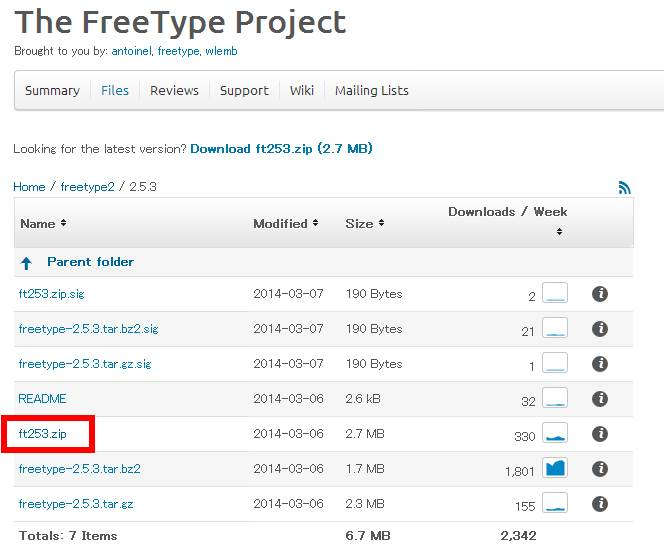

プログラム上のパラメータや操作方法などをユーザに提示するために， 画面上に文字列を描画することはアプリケーション作成の際に必要となるテクニックのひとつである． ここではOpenGLを使って画面上に文字列を描画する方法として， GLUTを使った方法とFTGLを用いた方法について述べる．
GLUTを使った方法
WindowsでOpenGLアプリケーションを作成する際に用いられているGLUTには 画面上に文字列を描画する関数が用意されている． これを使うのが最も簡単な方法である． (本実験ではFreeGLUTを用いているが，同じ関数が定義されている)．
GLUTの文字描画関数には glutBitmapCharacter と glutStrokeCharacter の2つがある． それぞれ，ビットマップフォントとストロークフォントで文字を描画してくれる． これらの関数は第1引数にフォントの種類，第2引数に描画する文字を指定する． フォントの種類として使えるのは以下のものだけである．
-
glutBitmapCharacterに使えるフォント
- GLUT_BITMAP_8_BY_13 : 8x13ピクセルの固定幅フォント
- GLUT_BITMAP_9_BY_15 : 9x15ピクセルの固定幅フォント
- GLUT_BITMAP_TIMES_ROMAN_10 : 10ポイントの可変幅Times Romanフォント
- GLUT_BITMAP_TIMES_ROMAN_24 : 24ポイントの可変幅Times Romanフォント
- GLUT_BITMAP_HELVETICA_10 : 10ポイントの可変幅Helveticaフォント
- GLUT_BITMAP_HELVETICA_12 : 12ポイントの可変幅Helveticaフォント
- GLUT_BITMAP_HELVETICA_18 : 18ポイントの可変幅Helveticaフォント
-
glutStrokeCharacterに使えるフォント
- GLUT_STROKE_ROMAN : 可変幅のRoman Simplexフォント
- GLUT_STROKE_MONO_ROMAN : 単一スペース幅のRoman Simplexフォント
以下に glutBitmapCharacter を使った文字列描画関数の例を示す．
/*!
* 文字列描画
* @param[in] str 文字列
* @param[in] w,h ウィンドウサイズ
* @param[in] x0,y0 文字列の位置(左上原点のスクリーン座標系,文字列の左下がこの位置になる)
*/
static void DrawString(string str, int w, int h, int x0, int y0)
{
glDisable(GL_LIGHTING);
// 平行投影にする
glMatrixMode(GL_PROJECTION);
glPushMatrix();
glLoadIdentity();
gluOrtho2D(0, w, h, 0);
glMatrixMode(GL_MODELVIEW);
glPushMatrix();
glLoadIdentity();
// 画面上にテキスト描画
glRasterPos2f(x0, y0);
int size = (int)str.size();
for(int i = 0; i < size; ++i){
char ic = str[i];
glutBitmapCharacter(GLUT_BITMAP_9_BY_15, ic);
}
glPopMatrix();
glMatrixMode(GL_PROJECTION);
glPopMatrix();
glMatrixMode(GL_MODELVIEW);
}
注意として，この関数では文字の色を指定していないので， 以下のように関数呼び出しの前にglColor3dなどで色を指定しておく．
glColor3d(0.0, 0.0, 1.0);
DrawString("test", g_iWinW, g_iWinH, 10, 10);
関数の中ではglRasterPos2f関数を用いて文字列の描画位置を変更している．
y0座標を変更すれば複数行に渡る文字列も描画できるようになる．
例えば，上記の関数で文字列を渡す引数string strを複数の文字列を格納したvector
for(int j = 0; j < (int)strs.size(); ++j){
glRasterPos2f(x0, y0);
int size = (int)strs[j].size();
for(int i = 0; i < size; ++i){
char ic = strs[j][i];
glutBitmapCharacter(GLUT_BITMAP_9_BY_15, ic);
}
y0 -= 20;
}
GLUTだけを用いた場合は日本語は描画できないので注意．

glutBitmapCharacterで文字列描画した例
GLUTでは1文字ずつ描画しているが， freeglutでは文字列をまとめて描画する関数も用意されている．
void glutBitmapString(void* font, const unsigned char *string);
void glutStrokeString(void* font, const unsigned char *string);
引数fontはGLUTのものと同じくフォントの種類を指定， stringにchar型配列を指定することができる． std::stringを用いている場合は，c_str()関数を使えばよい．
FTGLを使った方法
GLUTで文字列を簡単に描画することはできるものの，使えるフォントが限られていたり，日本語が扱えないなど制限も多い． これらを解決する方法としてここではFTGL(とfreetype)を用いた方法について述べる．
FLGLは OpenGLで文字列をレンダリングするためのオープンソースのC++ライブラリであり， フォントファイルを用いて任意のフォントを指定でき，様々なレンダリング方法(bitmap, pixmap, texture map, polygon meshなど) をサポートしている． FTGLはフォントの読み込みなどにfreetypeを用いているので，FTGLを用いるためにはまずfreetypeをビルドする必要がある．
freetypeとFTGLのビルド
freetypeとFTGLをビルドする手順を以下に示す．
-
SourceForgeのFreeTypeのページ
から最新のfreetypeをダウンロードする(ft*.zip)．
2016年9月時点の最新は2.7(ft27.zip)．
(freetype2 -> 2.7 -> ft27.zip とたどる)．

- ft*.zipを解凍する．できたフォルダ(freetype-2.7など)内のbuilds/windows/vc2010/freetype.slnを Visual C++ 2010で開き，ソリューション構成を"Release Multithreaded"にして，ビルドする．
- ビルドが成功したら，objs/vc2010/Win32にfreetype*MT.libができていることを確認する．
-
SourceForgeのFTGLのページ
から最新のFTGLをダウンロードする(ftgl-*.tar.gz)．
2014年6月1日現在の最新は2.1.3 RC5(ftgl-2.1.3-rc5.tar.gz)．
(FTGL Source -> 2.1.3~rc5 -> ftgl-2.1.3-rc5.tar.gzとたどる)．

- ftgl-*.tar.gzを解凍する．できたフォルダ(ftgl-2.1.3~rc5など)内のmsvc/vc8/ftgl.slnを Visual C++ 2010で開く．Visual Studio 変換ウィザードが出るので， 次へ -> 次へ -> 完了とクリックして変換する．
-
2つのプロジェクト(ftgl_dllとftgl_static)があるが，ここではftgl_dllを用いる．
プロジェクト名のところを右クリック -> プロパティでftgl_dllのプロジェクトの設定を以下のように変更し，ビルドする．
- 構成 : Release
- 構成プロパティ -> C/C++ -> 全般 -> 追加のインクルードディレクトリ : 先ほど解凍したfreetypeの中のincludeフォルダを指定
- 構成プロパティ -> C/C++ -> コード生成 -> ランタイムライブラリ : マルチスレッド (/MT)
- 構成プロパティ -> リンカー -> 全般 -> 追加のライブラリディレクトリ : 先ほど解凍したfreetypeの中のobjs/win32/vc2010フォルダを指定
- 構成プロパティ -> リンカー -> 入力 -> 追加の依存ファイル : freetype234.libを2.7ならfreetype27MT.libに変更
- ビルドが成功したら，msvc/buildにftgl.dll, ftgl.libができていることを確認する．
プロジェクトの設定
インクルード，ライブラリファイルを適切な場所にコピーして，自分のプロジェクトから読み込めるように設定する．
- freetypeを解凍したフォルダのincludeフォルダ内のファイルとフォルダをshared/incに， FTGLを解凍したフォルダのsrcフォルダ内のFTGLフォルダをインクルードディレクトリ (メディア実験用のサンプルではshared/inc)にコピーする．
- 上記でビルドしたfreetype*MT.libとftgl.libをライブラリディレクトリ (メディア実験用のサンプルではshared/lib)， ftgl.dllを実行ディレクトリ(shared/bin)にコピーする．
-
自分のプロジェクトを開き，プロジェクトのプロパティ -> 構成プロパティ -> リンカー -> 入力の
追加の依存ファイルにfreetype*MT.libとftgl.libを設定する，
もしくは，
ソースコードに以下のように記述する．
#pragma comment (lib, "freetype27MT.lib") #pragma comment (lib, "ftgl.lib")
freetype27MT.libのところはダウンロードしたfreetypeのバージョンに合わせて適切に書き換えること．
FTGLによる文字列描画
ここまででFTGLで文字列を描画するための準備が整った． 最後に文字列描画のためのコード例を示す．
FTGLを使うためには，まず以下のようにヘッダをインクルードする．
#include <FTGL/ftgl.h>
次にフォントファイルへのパスとFTGLのインスタンス，フォントサイズを格納する変数をグローバルで定義する．
#define FONT_FILE "C:\\Windows\\Fonts\\msgothic.ttc" static FTPixmapFont* g_pFont; unsigned long g_ulFontSize = 14; //!< フォントサイズ
ここではフォントファイルとしてMSゴシックを指定してある． そのほかにもWindowsならメイリオ("C:\\Windows\\Fonts\\meiryo.ttc")や フリーフォントのIPAフォント， VLゴシック， 日本語を使わないならばInconsolataなどもお勧めである．
FTPixmapFontはpixmapで文字列描画する． 詳しくは，FTGLのチュートリアル参照． ちなみにpixmapはbitmapが1bit/pixelで描画するのに対し， 8bit/pixelで描画するのでより滑らかな描画となる．
以下にこれらの変数を使って文字列を描画する関数を示す．
/*!
* 文字列描画
* @param[in] str 文字列
* @param[in] w,h ウィンドウサイズ
* @param[in] x0,y0 文字列の位置(左上原点のスクリーン座標系,文字列の左下がこの位置になる)
*/
void DrawStrings(vector<string> &strs, int w, int h, int x0, int y0)
{
glDisable(GL_LIGHTING);
glMatrixMode(GL_PROJECTION);
glPushMatrix();
glLoadIdentity();
gluOrtho2D(0, w, h, 0);
glMatrixMode(GL_MODELVIEW);
glPushMatrix();
glLoadIdentity();
glRasterPos2f(x0, y0);
// フォントの初期化
if(!g_pFont){
g_pFont = new FTPixmapFont(FONT_FILE);
if(g_pFont->Error()){
cout << "Failed to open font " << FONT_FILE << endl;
delete g_pFont;
g_pFont = 0;
}
else{
g_pFont->FaceSize(g_ulFontSize);
}
}
// FTGLで文字列を描画
if(g_pFont){
for(int j = 0; j < (int)strs.size(); ++j){
glRasterPos2f(x0, y0);
strs[j].push_back('\0');
g_pFont->Render(strs[j].c_str());
y0 += g_pFont->LineHeight();
}
}
glPopMatrix();
glMatrixMode(GL_PROJECTION);
glPopMatrix();
glMatrixMode(GL_MODELVIEW);
}
日本語とワイド文字列
FTGLで日本語を描画するためにはワイド文字列を使う必要がある． ワイド文字列はC/C++において固定長でマルチバイト文字を扱うために規定されたもので， 1つの文字を1つの整数値で扱えるようになっている (Unicodeなどのマルチバイト文字だと文字の種類(アルファベット，日本語，etc)で必要なバイト数が変わる)． C++ではマルチバイト文字列はcharやstring型に格納され， ワイド文字列はwchar_tやwstringという文字型，文字列型に格納する (C++11ではさらにUTF-16とUTF-32を内部表現とするchar16_tとchar32_tが追加された)．
上記の文字列描画関数DrawStringsを日本語に対応させるには， 第1引数の型を変えて，
void DrawStrings(vector<wstring> &strs, int w, int h, int x0, int y0)
とすればよいだけである．この関数を呼び出すときにはwstring型のvectorを指定する必要がある． wstringに文字列を格納する場合は，文字列リテラルLを使用して，「L"文字列"」のようにする．
以下に例を示す．
vector<wstring> strs;
strs.push_back(L"Bulletアプリケーション ver 1.0");
strs.push_back(L" sキー : シミュレーションの開始/停止");
strs.push_back(L" rキー : シーンリセット");
glColor3d(0.0, 0.0, 1.0);
DrawStrings(strs, g_iWinW, g_iWinH, 10, 18);

FTGLで日本語文字列を描画した例